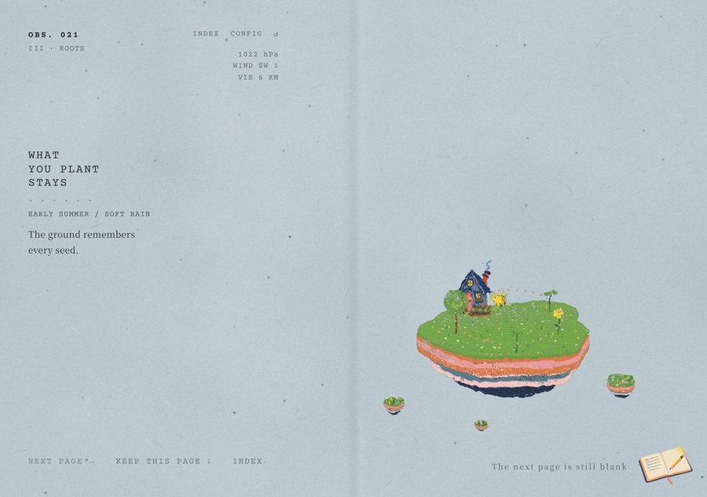
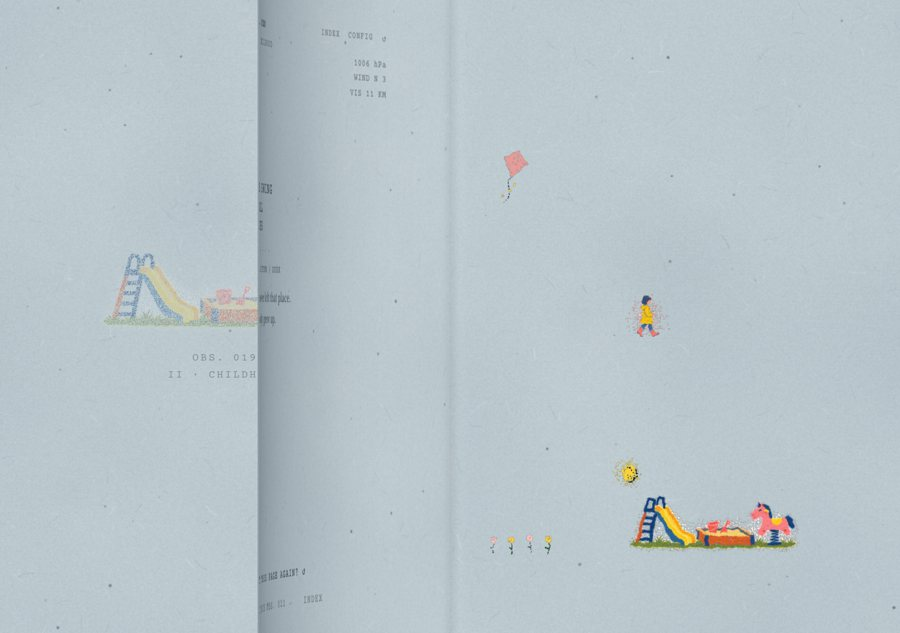
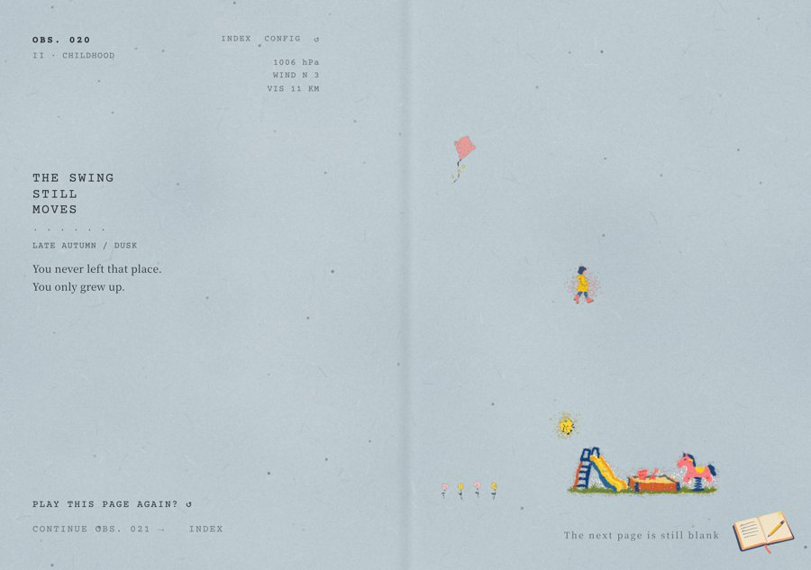
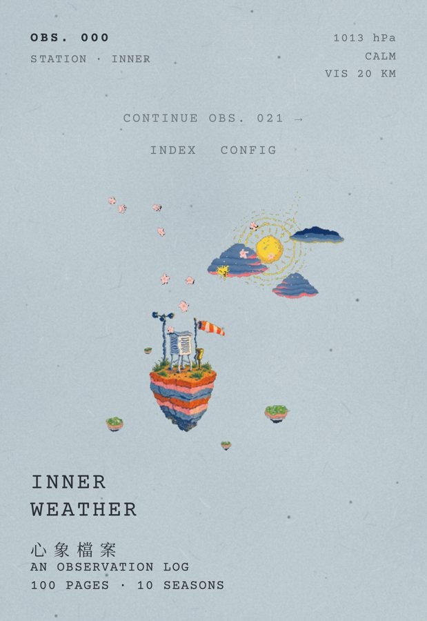

心 象 檔 案
A quiet game in 100 pages that opens into a two-page picture book on iPhone Duo.
Inner Weather is an observation log of the weather inside you. Each page is a small risograph-style illustration you play with one finger — gathering scattered light, breathing with a circle, keeping a shadow company — and when it is done, a short poem is typed onto the page. A hundred pages in ten seasons, from waking to whole.
心象檔案是一百頁的安靜遊戲，一本觀測自己內心天氣的紀錄。每一頁是一幅 riso 風格的小插畫，用一根手指就能玩；完成後，一首短詩會被打在頁面上。十個季節，從醒來到完整。

At the open display's 1.42 : 1 shape the game lays out as two facing pages — words on the left, the picture on the right — with the spine exactly on the hinge. The illustration leans over the fold and dissolves into the paper, dot by dot.

Swipe and the page lifts and curls over in a soft paper turn. Under it, the next page waits as a faint print of its season until it inks in.

Pages you have written stay in the book, still and with their poems, so you can leaf back through them — and play one again if you like. The next page stays blank until you get there.

Fold the phone and the same page carries on on the outer display. The layout follows the device live as it opens, closes and rotates. The spread also appears on iPad and on iPhone in landscape.
Open display · 2853 × 2007
Closed display · 1398 × 2034